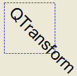
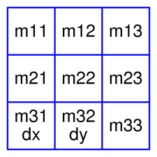
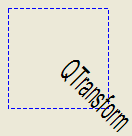

QTransform Class
The QTransform class specifies 2D transformations of a coordinate system. More...
| Header: | #include <QTransform> |
| CMake: | find_package(Qt6 REQUIRED COMPONENTS Gui) target_link_libraries(mytarget PRIVATE Qt6::Gui) |
| qmake: | QT += gui |
- List of all members, including inherited members
- QTransform is part of Painting Classes.
Public Types
| enum | TransformationType { TxNone, TxTranslate, TxScale, TxRotate, TxShear, TxProject } |
Public Functions
| QTransform() | |
| QTransform(qreal m11, qreal m12, qreal m13, qreal m21, qreal m22, qreal m23, qreal m31, qreal m32, qreal m33) | |
| QTransform(qreal m11, qreal m12, qreal m21, qreal m22, qreal dx, qreal dy) | |
| qreal | m11() const |
| qreal | m12() const |
| qreal | m13() const |
| qreal | m21() const |
| qreal | m22() const |
| qreal | m23() const |
| qreal | m31() const |
| qreal | m32() const |
| qreal | m33() const |
| QTransform | adjoint() const |
| qreal | determinant() const |
| qreal | dx() const |
| qreal | dy() const |
| QTransform | inverted(bool *invertible = nullptr) const |
| bool | isAffine() const |
| bool | isIdentity() const |
| bool | isInvertible() const |
| bool | isRotating() const |
| bool | isScaling() const |
| bool | isTranslating() const |
| void | map(qreal x, qreal y, qreal *tx, qreal *ty) const |
| QPoint | map(const QPoint &point) const |
| QPointF | map(const QPointF &p) const |
| QLine | map(const QLine &l) const |
| QLineF | map(const QLineF &line) const |
| QPolygonF | map(const QPolygonF &polygon) const |
| QPolygon | map(const QPolygon &polygon) const |
| QRegion | map(const QRegion ®ion) const |
| QPainterPath | map(const QPainterPath &path) const |
| void | map(int x, int y, int *tx, int *ty) const |
| QRectF | mapRect(const QRectF &rectangle) const |
| QRect | mapRect(const QRect &rectangle) const |
| QPolygon | mapToPolygon(const QRect &rectangle) const |
| void | reset() |
(since 6.5) QTransform & | rotate(qreal a, Qt::Axis axis, qreal distanceToPlane) |
| QTransform & | rotate(qreal a, Qt::Axis axis = Qt::ZAxis) |
(since 6.5) QTransform & | rotateRadians(qreal a, Qt::Axis axis, qreal distanceToPlane) |
| QTransform & | rotateRadians(qreal a, Qt::Axis axis = Qt::ZAxis) |
| QTransform & | scale(qreal sx, qreal sy) |
| void | setMatrix(qreal m11, qreal m12, qreal m13, qreal m21, qreal m22, qreal m23, qreal m31, qreal m32, qreal m33) |
| QTransform & | shear(qreal sh, qreal sv) |
| QTransform & | translate(qreal dx, qreal dy) |
| QTransform | transposed() const |
| QTransform::TransformationType | type() const |
| QVariant | operator QVariant() const |
| bool | operator!=(const QTransform &matrix) const |
| QTransform | operator*(const QTransform &matrix) const |
| QTransform & | operator*=(const QTransform &matrix) |
| QTransform & | operator*=(qreal scalar) |
| QTransform & | operator+=(qreal scalar) |
| QTransform & | operator-=(qreal scalar) |
| QTransform & | operator/=(qreal scalar) |
| QTransform & | operator=(const QTransform &matrix) |
| bool | operator==(const QTransform &matrix) const |
Static Public Members
| QTransform | fromScale(qreal sx, qreal sy) |
| QTransform | fromTranslate(qreal dx, qreal dy) |
| bool | quadToQuad(const QPolygonF &one, const QPolygonF &two, QTransform &trans) |
| bool | quadToSquare(const QPolygonF &quad, QTransform &trans) |
| bool | squareToQuad(const QPolygonF &quad, QTransform &trans) |
Related Non-Members
| bool | qFuzzyCompare(const QTransform &t1, const QTransform &t2) |
| size_t | qHash(const QTransform &key, size_t seed = 0) |
| QPoint | operator*(const QPoint &point, const QTransform &matrix) |
| QPointF | operator*(const QPointF &point, const QTransform &matrix) |
| QLineF | operator*(const QLineF &line, const QTransform &matrix) |
| QLine | operator*(const QLine &line, const QTransform &matrix) |
| QPolygonF | operator*(const QPolygonF &polygon, const QTransform &matrix) |
| QPolygon | operator*(const QPolygon &polygon, const QTransform &matrix) |
| QRegion | operator*(const QRegion ®ion, const QTransform &matrix) |
| QPainterPath | operator*(const QPainterPath &path, const QTransform &matrix) |
| QDataStream & | operator<<(QDataStream &stream, const QTransform &matrix) |
| QDataStream & | operator>>(QDataStream &stream, QTransform &matrix) |
Detailed Description
A transformation specifies how to translate, scale, shear, rotate or project the coordinate system, and is typically used when rendering graphics.
A QTransform object can be built using the setMatrix(), scale(), rotate(), translate() and shear() functions. Alternatively, it can be built by applying basic matrix operations. The matrix can also be defined when constructed, and it can be reset to the identity matrix (the default) using the reset() function.
The QTransform class supports mapping of graphic primitives: A given point, line, polygon, region, or painter path can be mapped to the coordinate system defined by this matrix using the map() function. In case of a rectangle, its coordinates can be transformed using the mapRect() function. A rectangle can also be transformed into a polygon (mapped to the coordinate system defined by this matrix), using the mapToPolygon() function.
QTransform provides the isIdentity() function which returns true if the matrix is the identity matrix, and the isInvertible() function which returns true if the matrix is non-singular (i.e. AB = BA = I). The inverted() function returns an inverted copy of this matrix if it is invertible (otherwise it returns the identity matrix), and adjoint() returns the matrix's classical adjoint. In addition, QTransform provides the determinant() function which returns the matrix's determinant.
Finally, the QTransform class supports matrix multiplication, addition and subtraction, and objects of the class can be streamed as well as compared.
Rendering Graphics
When rendering graphics, the matrix defines the transformations but the actual transformation is performed by the drawing routines in QPainter.
By default, QPainter operates on the associated device's own coordinate system. The standard coordinate system of a QPaintDevice has its origin located at the top-left position. The x values increase to the right; y values increase downward. For a complete description, see the coordinate system documentation.
QPainter has functions to translate, scale, shear and rotate the coordinate system without using a QTransform. For example:
|  | void SimpleTransformation::paintEvent(QPaintEvent *) { QPainter painter(this); painter.setPen(QPen(Qt::blue, 1, Qt::DashLine)); painter.drawRect(0, 0, 100, 100); painter.rotate(45); painter.setFont(QFont("Helvetica", 24)); painter.setPen(QPen(Qt::black, 1)); painter.drawText(20, 10, "QTransform"); } |
Although these functions are very convenient, it can be more efficient to build a QTransform and call QPainter::setTransform() if you want to perform more than a single transform operation. For example:
void CombinedTransformation::paintEvent(QPaintEvent *) { QPainter painter(this); painter.setPen(QPen(Qt::blue, 1, Qt::DashLine)); painter.drawRect(0, 0, 100, 100); QTransform transform; transform.translate(50, 50); transform.rotate(45); transform.scale(0.5, 1.0); painter.setTransform(transform); painter.setFont(QFont("Helvetica", 24)); painter.setPen(QPen(Qt::black, 1)); painter.drawText(20, 10, "QTransform"); } |
Basic Matrix Operations

A QTransform object contains a 3 x 3 matrix. The m31 (dx) and m32 (dy) elements specify horizontal and vertical translation. The m11 and m22 elements specify horizontal and vertical scaling. The m21 and m12 elements specify horizontal and vertical shearing. And finally, the m13 and m23 elements specify horizontal and vertical projection, with m33 as an additional projection factor.
QTransform transforms a point in the plane to another point using the following formulas:
x' = m11*x + m21*y + dx
y' = m22*y + m12*x + dy
if (!isAffine()) {
w' = m13*x + m23*y + m33
x' /= w'
y' /= w'
}
The point (x, y) is the original point, and (x', y') is the transformed point. (x', y') can be transformed back to (x, y) by performing the same operation on the inverted() matrix.
The various matrix elements can be set when constructing the matrix, or by using the setMatrix() function later on. They can also be manipulated using the translate(), rotate(), scale() and shear() convenience functions. The currently set values can be retrieved using the m11(), m12(), m13(), m21(), m22(), m23(), m31(), m32(), m33(), dx() and dy() functions.
Translation is the simplest transformation. Setting dx and dy will move the coordinate system dx units along the X axis and dy units along the Y axis. Scaling can be done by setting m11 and m22. For example, setting m11 to 2 and m22 to 1.5 will double the height and increase the width by 50%. The identity matrix has m11, m22, and m33 set to 1 (all others are set to 0) mapping a point to itself. Shearing is controlled by m12 and m21. Setting these elements to values different from zero will twist the coordinate system. Rotation is achieved by setting both the shearing factors and the scaling factors. Perspective transformation is achieved by setting both the projection factors and the scaling factors.
Combining Transforms
Here's the combined transformations example using basic matrix operations:
|  | void BasicOperations::paintEvent(QPaintEvent *) { const double a = qDegreesToRadians(45.0); double sina = sin(a); double cosa = cos(a); QTransform scale(0.5, 0, 0, 1.0, 0, 0); QTransform rotate(cosa, sina, -sina, cosa, 0, 0); QTransform translate(1, 0, 0, 1, 50.0, 50.0); QTransform transform = scale * rotate * translate; QPainter painter(this); painter.setPen(QPen(Qt::blue, 1, Qt::DashLine)); painter.drawRect(0, 0, 100, 100); painter.setTransform(transform); painter.setFont(QFont("Helvetica", 24)); painter.setPen(QPen(Qt::black, 1)); painter.drawText(20, 10, "QTransform"); } |
The combined transform first scales each operand, then rotates it, and finally translates it, just as in the order in which the product of its factors is written. This means the point to which the transforms are applied is implicitly multiplied on the left with the transform to its right.
Relation to Matrix Notation
The matrix notation in QTransform is the transpose of a commonly-taught convention which represents transforms and points as matrices and vectors. That convention multiplies its matrix on the left and column vector to the right. In other words, when several transforms are applied to a point, the right-most matrix acts directly on the vector first. Then the next matrix to the left acts on the result of the first operation - and so on. As a result, that convention multiplies the matrices that make up a composite transform in the reverse of the order in QTransform, as you can see in Combining Transforms. Transposing the matrices, and combining them to the right of a row vector that represents the point, lets the matrices of transforms appear, in their product, in the order in which we think of the transforms being applied to the point.
See also QPainter, Coordinate System, Affine Transformations Example, and Transformations Example.
Member Type Documentation
enum QTransform::TransformationType
| Constant | Value |
|---|---|
QTransform::TxNone | 0x00 |
QTransform::TxTranslate | 0x01 |
QTransform::TxScale | 0x02 |
QTransform::TxRotate | 0x04 |
QTransform::TxShear | 0x08 |
QTransform::TxProject | 0x10 |
Member Function Documentation
QTransform::QTransform()
Constructs an identity matrix.
All elements are set to zero except m11 and m22 (specifying the scale) and m33 which are set to 1.
See also reset().
QTransform::QTransform(qreal m11, qreal m12, qreal m13, qreal m21, qreal m22, qreal m23, qreal m31, qreal m32, qreal m33)
Constructs a matrix with the elements, m11, m12, m13, m21, m22, m23, m31, m32, m33.
See also setMatrix().
QTransform::QTransform(qreal m11, qreal m12, qreal m21, qreal m22, qreal dx, qreal dy)
Constructs a matrix with the elements, m11, m12, m21, m22, dx and dy.
See also setMatrix().
qreal QTransform::m11() const
Returns the horizontal scaling factor.
See also scale() and Basic Matrix Operations.
qreal QTransform::m12() const
Returns the vertical shearing factor.
See also shear() and Basic Matrix Operations.
qreal QTransform::m13() const
Returns the horizontal projection factor.
See also translate() and Basic Matrix Operations.
qreal QTransform::m21() const
Returns the horizontal shearing factor.
See also shear() and Basic Matrix Operations.
qreal QTransform::m22() const
Returns the vertical scaling factor.
See also scale() and Basic Matrix Operations.
qreal QTransform::m23() const
Returns the vertical projection factor.
See also translate() and Basic Matrix Operations.
qreal QTransform::m31() const
Returns the horizontal translation factor.
See also dx(), translate(), and Basic Matrix Operations.
qreal QTransform::m32() const
Returns the vertical translation factor.
See also dy(), translate(), and Basic Matrix Operations.
qreal QTransform::m33() const
Returns the division factor.
See also translate() and Basic Matrix Operations.
QTransform QTransform::adjoint() const
Returns the adjoint of this matrix.
qreal QTransform::determinant() const
Returns the matrix's determinant.
qreal QTransform::dx() const
Returns the horizontal translation factor.
See also m31(), translate(), and Basic Matrix Operations.
qreal QTransform::dy() const
Returns the vertical translation factor.
See also translate() and Basic Matrix Operations.
[static] QTransform QTransform::fromScale(qreal sx, qreal sy)
Creates a matrix which corresponds to a scaling of sx horizontally and sy vertically. This is the same as QTransform().scale(sx, sy) but slightly faster.
[static] QTransform QTransform::fromTranslate(qreal dx, qreal dy)
Creates a matrix which corresponds to a translation of dx along the x axis and dy along the y axis. This is the same as QTransform().translate(dx, dy) but slightly faster.
QTransform QTransform::inverted(bool *invertible = nullptr) const
Returns an inverted copy of this matrix.
If the matrix is singular (not invertible), the returned matrix is the identity matrix. If invertible is valid (i.e. not 0), its value is set to true if the matrix is invertible, otherwise it is set to false.
See also isInvertible().
bool QTransform::isAffine() const
Returns true if the matrix represent an affine transformation, otherwise returns false.
bool QTransform::isIdentity() const
Returns true if the matrix is the identity matrix, otherwise returns false.
See also reset().
bool QTransform::isInvertible() const
Returns true if the matrix is invertible, otherwise returns false.
See also inverted().
bool QTransform::isRotating() const
Returns true if the matrix represents some kind of a rotating transformation, otherwise returns false.
Note: A rotation transformation of 180 degrees and/or 360 degrees is treated as a scaling transformation.
See also reset().
bool QTransform::isScaling() const
Returns true if the matrix represents a scaling transformation, otherwise returns false.
See also reset().
bool QTransform::isTranslating() const
Returns true if the matrix represents a translating transformation, otherwise returns false.
See also reset().
void QTransform::map(qreal x, qreal y, qreal *tx, qreal *ty) const
Maps the given coordinates x and y into the coordinate system defined by this matrix. The resulting values are put in *tx and *ty, respectively.
The coordinates are transformed using the following formulas:
x' = m11*x + m21*y + dx
y' = m22*y + m12*x + dy
if (!isAffine()) {
w' = m13*x + m23*y + m33
x' /= w'
y' /= w'
}
The point (x, y) is the original point, and (x', y') is the transformed point.
See also Basic Matrix Operations.
QPoint QTransform::map(const QPoint &point) const
This is an overloaded function.
Creates and returns a QPoint object that is a copy of the given point, mapped into the coordinate system defined by this matrix. Note that the transformed coordinates are rounded to the nearest integer.
QPointF QTransform::map(const QPointF &p) const
This is an overloaded function.
Creates and returns a QPointF object that is a copy of the given point, p, mapped into the coordinate system defined by this matrix.
QLine QTransform::map(const QLine &l) const
This is an overloaded function.
Creates and returns a QLineF object that is a copy of the given line, l, mapped into the coordinate system defined by this matrix.
QLineF QTransform::map(const QLineF &line) const
This is an overloaded function.
Creates and returns a QLine object that is a copy of the given line, mapped into the coordinate system defined by this matrix. Note that the transformed coordinates are rounded to the nearest integer.
QPolygonF QTransform::map(const QPolygonF &polygon) const
This is an overloaded function.
Creates and returns a QPolygonF object that is a copy of the given polygon, mapped into the coordinate system defined by this matrix.
QPolygon QTransform::map(const QPolygon &polygon) const
This is an overloaded function.
Creates and returns a QPolygon object that is a copy of the given polygon, mapped into the coordinate system defined by this matrix. Note that the transformed coordinates are rounded to the nearest integer.
QRegion QTransform::map(const QRegion ®ion) const
This is an overloaded function.
Creates and returns a QRegion object that is a copy of the given region, mapped into the coordinate system defined by this matrix.
Calling this method can be rather expensive if rotations or shearing are used.
QPainterPath QTransform::map(const QPainterPath &path) const
This is an overloaded function.
Creates and returns a QPainterPath object that is a copy of the given path, mapped into the coordinate system defined by this matrix.
void QTransform::map(int x, int y, int *tx, int *ty) const
This is an overloaded function.
Maps the given coordinates x and y into the coordinate system defined by this matrix. The resulting values are put in *tx and *ty, respectively. Note that the transformed coordinates are rounded to the nearest integer.
QRectF QTransform::mapRect(const QRectF &rectangle) const
Creates and returns a QRectF object that is a copy of the given rectangle, mapped into the coordinate system defined by this matrix.
The rectangle's coordinates are transformed using the following formulas:
x' = m11*x + m21*y + dx
y' = m22*y + m12*x + dy
if (!isAffine()) {
w' = m13*x + m23*y + m33
x' /= w'
y' /= w'
}
If rotation or shearing has been specified, this function returns the bounding rectangle. To retrieve the exact region the given rectangle maps to, use the mapToPolygon() function instead.
See also mapToPolygon() and Basic Matrix Operations.
QRect QTransform::mapRect(const QRect &rectangle) const
This is an overloaded function.
Creates and returns a QRect object that is a copy of the given rectangle, mapped into the coordinate system defined by this matrix. Note that the transformed coordinates are rounded to the nearest integer.
QPolygon QTransform::mapToPolygon(const QRect &rectangle) const
Creates and returns a QPolygon representation of the given rectangle, mapped into the coordinate system defined by this matrix.
The rectangle's coordinates are transformed using the following formulas:
x' = m11*x + m21*y + dx
y' = m22*y + m12*x + dy
if (!isAffine()) {
w' = m13*x + m23*y + m33
x' /= w'
y' /= w'
}
Polygons and rectangles behave slightly differently when transformed (due to integer rounding), so matrix.map(QPolygon(rectangle)) is not always the same as matrix.mapToPolygon(rectangle).
See also mapRect() and Basic Matrix Operations.
[static] bool QTransform::quadToQuad(const QPolygonF &one, const QPolygonF &two, QTransform &trans)
Creates a transformation matrix, trans, that maps a four-sided polygon, one, to another four-sided polygon, two. Returns true if the transformation is possible; otherwise returns false.
This is a convenience method combining quadToSquare() and squareToQuad() methods. It allows the input quad to be transformed into any other quad.
See also squareToQuad() and quadToSquare().
[static] bool QTransform::quadToSquare(const QPolygonF &quad, QTransform &trans)
Creates a transformation matrix, trans, that maps a four-sided polygon, quad, to a unit square. Returns true if the transformation is constructed or false if such a transformation does not exist.
See also squareToQuad() and quadToQuad().
void QTransform::reset()
Resets the matrix to an identity matrix, i.e. all elements are set to zero, except m11 and m22 (specifying the scale) and m33 which are set to 1.
See also QTransform(), isIdentity(), and Basic Matrix Operations.
[since 6.5] QTransform &QTransform::rotate(qreal a, Qt::Axis axis, qreal distanceToPlane)
Rotates the coordinate system counterclockwise by the given angle a about the specified axis at distance distanceToPlane from the screen and returns a reference to the matrix.
Note that if you apply a QTransform to a point defined in widget coordinates, the direction of the rotation will be clockwise because the y-axis points downwards.
The angle is specified in degrees.
If distanceToPlane is zero, it will be ignored. This is suitable for implementing orthographic projections where the z coordinate should be dropped rather than projected.
This function was introduced in Qt 6.5.
See also setMatrix().
QTransform &QTransform::rotate(qreal a, Qt::Axis axis = Qt::ZAxis)
This is an overloaded function.
Rotates the coordinate system counterclockwise by the given angle a about the specified axis at distance 1024.0 from the screen and returns a reference to the matrix.
Note that if you apply a QTransform to a point defined in widget coordinates, the direction of the rotation will be clockwise because the y-axis points downwards.
The angle is specified in degrees.
See also setMatrix.
[since 6.5] QTransform &QTransform::rotateRadians(qreal a, Qt::Axis axis, qreal distanceToPlane)
Rotates the coordinate system counterclockwise by the given angle a about the specified axis at distance distanceToPlane from the screen and returns a reference to the matrix.
Note that if you apply a QTransform to a point defined in widget coordinates, the direction of the rotation will be clockwise because the y-axis points downwards.
The angle is specified in radians.
If distanceToPlane is zero, it will be ignored. This is suitable for implementing orthographic projections where the z coordinate should be dropped rather than projected.
This function was introduced in Qt 6.5.
See also setMatrix().
QTransform &QTransform::rotateRadians(qreal a, Qt::Axis axis = Qt::ZAxis)
This is an overloaded function.
Rotates the coordinate system counterclockwise by the given angle a about the specified axis at distance 1024.0 from the screen and returns a reference to the matrix.
Note that if you apply a QTransform to a point defined in widget coordinates, the direction of the rotation will be clockwise because the y-axis points downwards.
The angle is specified in radians.
See also setMatrix().
QTransform &QTransform::scale(qreal sx, qreal sy)
Scales the coordinate system by sx horizontally and sy vertically, and returns a reference to the matrix.
See also setMatrix().
void QTransform::setMatrix(qreal m11, qreal m12, qreal m13, qreal m21, qreal m22, qreal m23, qreal m31, qreal m32, qreal m33)
Sets the matrix elements to the specified values, m11, m12, m13 m21, m22, m23 m31, m32 and m33. Note that this function replaces the previous values. QTransform provides the translate(), rotate(), scale() and shear() convenience functions to manipulate the various matrix elements based on the currently defined coordinate system.
See also QTransform().
QTransform &QTransform::shear(qreal sh, qreal sv)
Shears the coordinate system by sh horizontally and sv vertically, and returns a reference to the matrix.
See also setMatrix().
[static] bool QTransform::squareToQuad(const QPolygonF &quad, QTransform &trans)
Creates a transformation matrix, trans, that maps a unit square to a four-sided polygon, quad. Returns true if the transformation is constructed or false if such a transformation does not exist.
See also quadToSquare() and quadToQuad().
QTransform &QTransform::translate(qreal dx, qreal dy)
Moves the coordinate system dx along the x axis and dy along the y axis, and returns a reference to the matrix.
See also setMatrix().
QTransform QTransform::transposed() const
Returns the transpose of this matrix.
QTransform::TransformationType QTransform::type() const
Returns the transformation type of this matrix.
The transformation type is the highest enumeration value capturing all of the matrix's transformations. For example, if the matrix both scales and shears, the type would be TxShear, because TxShear has a higher enumeration value than TxScale.
Knowing the transformation type of a matrix is useful for optimization: you can often handle specific types more optimally than handling the generic case.
QVariant QTransform::operator QVariant() const
Returns the transform as a QVariant.
bool QTransform::operator!=(const QTransform &matrix) const
Returns true if this matrix is not equal to the given matrix, otherwise returns false.
QTransform QTransform::operator*(const QTransform &matrix) const
Returns the result of multiplying this matrix by the given matrix.
Note that matrix multiplication is not commutative, i.e. a*b != b*a.
QTransform &QTransform::operator*=(const QTransform &matrix)
This is an overloaded function.
Returns the result of multiplying this matrix by the given matrix.
QTransform &QTransform::operator*=(qreal scalar)
This is an overloaded function.
Returns the result of performing an element-wise multiplication of this matrix with the given scalar.
QTransform &QTransform::operator+=(qreal scalar)
This is an overloaded function.
Returns the matrix obtained by adding the given scalar to each element of this matrix.
QTransform &QTransform::operator-=(qreal scalar)
This is an overloaded function.
Returns the matrix obtained by subtracting the given scalar from each element of this matrix.
QTransform &QTransform::operator/=(qreal scalar)
This is an overloaded function.
Returns the result of performing an element-wise division of this matrix by the given scalar.
[noexcept] QTransform &QTransform::operator=(const QTransform &matrix)
Assigns the given matrix's values to this matrix.
bool QTransform::operator==(const QTransform &matrix) const
Returns true if this matrix is equal to the given matrix, otherwise returns false.
Related Non-Members
bool qFuzzyCompare(const QTransform &t1, const QTransform &t2)
Returns true if t1 and t2 are equal, allowing for a small fuzziness factor for floating-point comparisons; false otherwise.
[noexcept] size_t qHash(const QTransform &key, size_t seed = 0)
Returns the hash value for key, using seed to seed the calculation.
QPoint operator*(const QPoint &point, const QTransform &matrix)
This is the same as matrix.map(point).
See also QTransform::map().
QPointF operator*(const QPointF &point, const QTransform &matrix)
Same as matrix.map(point).
See also QTransform::map().
QLineF operator*(const QLineF &line, const QTransform &matrix)
This is the same as matrix.map(line).
See also QTransform::map().
QLine operator*(const QLine &line, const QTransform &matrix)
This is the same as matrix.map(line).
See also QTransform::map().
QPolygonF operator*(const QPolygonF &polygon, const QTransform &matrix)
This is the same as matrix.map(polygon).
See also QTransform::map().
QPolygon operator*(const QPolygon &polygon, const QTransform &matrix)
This is the same as matrix.map(polygon).
See also QTransform::map().
QRegion operator*(const QRegion ®ion, const QTransform &matrix)
This is the same as matrix.map(region).
See also QTransform::map().
QPainterPath operator*(const QPainterPath &path, const QTransform &matrix)
This is the same as matrix.map(path).
See also QTransform::map().
QDataStream &operator<<(QDataStream &stream, const QTransform &matrix)
Writes the given matrix to the given stream and returns a reference to the stream.
See also Serializing Qt Data Types.
QDataStream &operator>>(QDataStream &stream, QTransform &matrix)
Reads the given matrix from the given stream and returns a reference to the stream.
See also Serializing Qt Data Types.